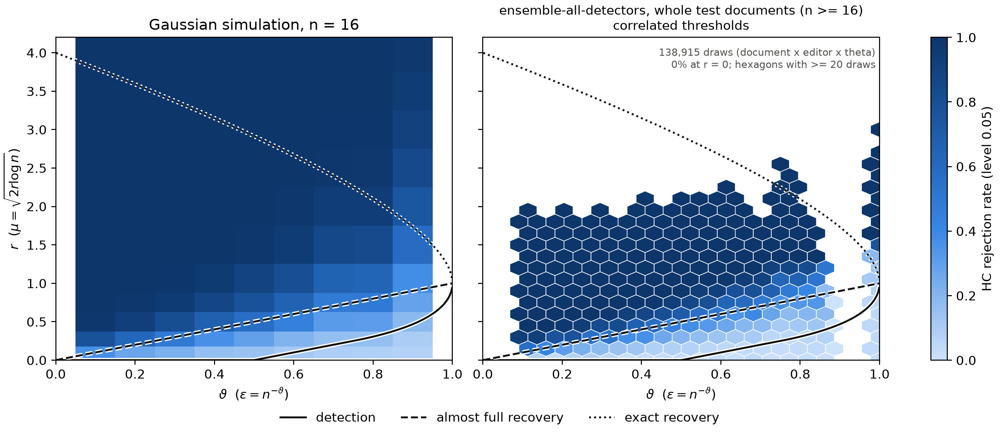

Detecting AI Edits in Human Text
Most AI-assisted writing is a human draft with a few sentences polished by a model. We treat those edited sentences as a sparse signal hidden among human ones, and test each document with Higher Criticism on per-sentence p-values that are exactly valid for any detector.
The problem
A student asks a chatbot to fix one awkward sentence; a reviewer polishes a paragraph. The document stays mostly human. Detectors built for fully generated text dilute a few edits in a long document, and a single edited sentence carries little evidence on its own. The question is when the evidence from a few weak sentences adds up.
Human: The goal of this work is clearly formulated by posing the proper research questions.
AI-edited (GPT-6 Luna): The goal of this work is clearly articulated through well-formulated research questions.
One of 2 million in-context edits in our corpus: 36% of the words changed.
Try it: how sparse can the edits be?
A 16-sentence document. Slide to change how many sentences an AI edited; the bar shows how often our detector + Higher Criticism flags such documents (measured on real test documents).
Black tick: 5.3%, the rate on unedited human documents. Ensemble detector, windows of 16 consecutive sentences from test documents.
How it works
Results
1 · Sentence level: fine-tuning on edits matters most
Share of edited test sentences detected at a 1% false-positive rate. Qwen 3.5 is a held-out editor that no detector we trained ever saw.
Data table
2 · Correcting for correlation restores the false-positive rate
How often HC flags one of 1,301 fully human test documents (target: 5%), with textbook independent-sentence cutoffs and with our correlated cutoffs.
Data table
3 · Document level: detection fades as edits get sparser
Share of edited whole test documents (16+ sentences) flagged, as edits become rarer. At θ = 0.1 about 65% of sentences are edited; at θ = 0.9 a 16-sentence document has one.
Data table
4 · Against the theory

5 · Finding and counting the edits is harder than detecting them
In progress
Human, fully AI, or AI-edited?
A second test with the opposite null ("every sentence is AI-generated") separates fully generated documents from edited human ones. Share of documents given the correct label:
Does AI-edited text change what a language model learns?
Small language models pretrained on AI-edited copies of the corpus reach nearly the same perplexity as on human text, but learn to prefer the AI-edited version of a sentence over its human original (Δ = +0.38 nats per token vs. −0.03 for repeated human text). Down-weighting edited sentences by how much they were changed removes only about 10% of that shift.